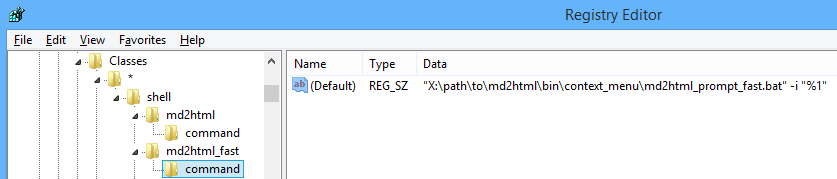

HomeInstallationUsageIndex
HomeInstallationUsageIndex GitHub
</>
GitHub
</>
Usage
This section describes the program running and documentation projects configuration. Documentation content writing, formatting and structuring are described in the other sections.
The Java and the Python executables are platform-independent so they will theoretically work in all environments where the corresponding virtual machines are installed. The tests were done only on Windows and on Ubuntu Linux. The examples in this documentation are mostly given applied to Windows, but they may be easily adapted for Linux. Some Linux specific notes are given when required.
A simple usage example for the Python version is:
>python %MD2HTML_HOME%/python/md2html.py -i test.txtand for the Java version is:
>java -jar %MD2HTML_HOME%/java/target/md2html-bin.jar -i test.txtThese both will convert file test.txt into file test.html using default parameters.
Note
The above commands very well explain the main idea of the program usage but there are more convenient ways described below in this section.
The program has much more command line options that are listed and described in the reference page.
There are two ways of the program usage:
This mode accepts all required parameters in the command line and allows processing one document
per one run (unless GLOB argument is used). It's selected
if the --argument-file argument is not specified.
The --argument-file argument defines the argument file that will be used for
processing. This may be a single parameter of the call or other command line parameters may be
specified as well.
Note
The command line and the argument file may specify different values for the parameters that mean the same (sometimes they have different names). In this case the command line arguments will override the corresponding parameters in the argument file.
The argument file allows to define:
Here is a simplest example of an argument file:
{
"documents": [
{ "input": "index.txt", "title": "Home" },
{ "input": "about.txt", "output": "about.html", "title": "Home" }
]
}It's similar to using command line arguments, except it defines several documents to process.
A more complex example and the argument file structure are described in the reference page.
To execute an argument file md2html_args.json the following command may be used:
>python %MD2HTML_HOME%/python/md2html.py --argument-file md2html_args.jsonThe following convenience command scripts are provided:
| For Windows | For Linux | Description |
|---|---|---|
generate_doc_py.bat |
generate_doc_py |
Uses the Python version |
generate_doc_java.bat |
generate_doc_java |
Uses the Java version |
generate_doc.bat |
generate_doc |
Uses the executor selector |
The Windows versions may be run by double-click from the Windows file explorer. The Linux Bash script versions may need special environmental adjustments (depending on the Linux distribution) to behave the same way. In Ubuntu these scripts were tested only in the command line terminal.
These scripts execute the argument file md2html_args.json in the directory they are called
from. They will open a command window and close it just as they successfully complete.
If there are errors, the command window will stay open with the information and error messages
displayed.
These scripts are very small and intended to be copied to a project's directory where they will process the project's argument file (see the recommended project structure).
The scripts generate_doc.bat and generate_doc use intermediate scripts with the executor
selector. These scripts accept their first argument py, or java and run the corresponding
version of the program. If nether of these arguments are specified the default executor will be
run (that is the Python version for now).
Important
The documentation projects prepared for versions of this program prior to 1.0.0 will not work with these scripts. See here for possible workarounds.
The program may be integrated into Windows Explorer context menu:

This may be a quick and convenient way to convert single documents.
The "no prompt" version generates HTML from the selected file with default options. It leaves
the command window open only in case of errors. The other version opens a command line window and
allows redefining some options. Just pressing Enter will fulfill generation with the default
options.
To add these context menu items, open the Windows Registry editor (press Win+R, type regedit
and press Enter) and add the following keys and values:
[HKEY_CURRENT_USER\Software\Classes\*\shell\md2html]
@="Markdown to HTML..."
"icon"="\"X:\\path\\to\\md2html\\bin\\context_menu\\icon.ico"
[HKEY_CURRENT_USER\Software\Classes\*\shell\md2html\command]
@="\"\"X:\\path\\to\\md2html\\bin\\context_menu\\md2html_prompt.bat\" -i \"%1\""
[HKEY_CURRENT_USER\Software\Classes\*\shell\md2html_fast]
@="Markdown to HTML (no prompt)"
"icon"="\"X:\\path\\to\\md2html\\bin\\context_menu\\icon.ico"
[HKEY_CURRENT_USER\Software\Classes\*\shell\md2html_fast\command]
@="\"X:\\path\\to\\md2html\\bin\\context_menu\\md2html_prompt_fast.bat\" -i \"%1\""Here @ stands for (Default) value name. py or java may be added before -i argument.
The quotes must be set like this:

There is a Windows command line script that automates this operation. Open Windows console and execute:
>%MD2HTML_HOME%\bin\context_menu\generate_reg_file.bat
The output file is: C:\Users\user1\md2html_context_menu_integration.regFind the generated file in the user's profile directory, check and execute it (by double-click). Read the popped up message and confirm the operation.
Note
There's no such integration for Linux. The interested Linux users may use the scripts
md2html_prompt.bat and md2html_prompt_fast.bat in the directory bin/context_menu/ as
the starting point for adaption.
The program doesn't set restrictions on the documentation project structure. The following structure is just a suggested approach that is used in this documentation.
Note that there's a quick start script described here that creates a simple project with a structure like this. The following description may be used for manual project setup.
$ tree -L 2 --charset=ascii --dirsfirst
.
|-- doc
| |-- content
| | |-- doc1.html
| | `-- doc2.html
| |-- layout
| | |-- pict
| | | |-- layout_image1.png
| | | `-- layout_image2.png
| | |-- styles.css
| | `-- scripts.js
| |-- pict
| | |-- image1.png
| | `-- image2.png
| |-- themes
| | |-- light_default_content.css
| | `-- light_default_layout.css
| |-- favicon.png
| `-- custom.css
|-- doc_src
| |-- templates
| | `-- multipage.html
| |-- doc1.txt
| `-- doc2.txt
|-- doc0.html
|-- doc0.txt
|-- generate_doc.bat
`-- md2html_args.jsondoc0.txt and doc0.html are the Markdown document and its corresponding generated HTML
page that we want to have in the project's root.
Hint
It may be convenient to have a documentation starting page in the project's root directory but this page, on the other hand, requires special manipulation, so this decision is a kind of a trade-off.
the doc directory along with the file doc0.html contain the whole project's HTML
documentation with all required resources like images and CSS files.
This directory may be used and distributed autonomously (with additional file doc0.html
if it's used).
Please note that as for now it's possible on the HTML pages to place links to their source Markdown texts. In this case, if we want these links to work, we need to preserve the source texts location.
the doc/content directory is intended to contain the generated artifacts only. I case of
problems with document generation, this directory may be safely deleted (or, maybe, better
first renamed and then deleted). On the next project regeneration this directory and its
content will be recreated.
the doc_src directory contains all source files required for producing the project's
documentation (except the file doc0.txt if we want to use it);
generate_doc.bat — the double-click script for the whole HTML documentation regeneration;
md2html_args.json — the project's argument file;
doc/layout directory contains the resources that are used by the template itself. It's a
convenient way to separate those resources from the ones that are used by the documentation
content. This directory may be copy-pasted to a new project and it will most likely work;
doc/themes directory contains the color themes used by
the documentation. More than one theme may be used at the same time.
favicon.png file was placed here as it's treated as rather a project's artifact than an
artifact belonging to the template;
custom.css is intended to contain the styles specific to the other project that is created
by copy-pasting the current documentation structure and its artifacts.
The version 1.0.0 of the program introduced the following significant changes:
Those changes have made this program version incompatible with the documentation projects prepared for the previous versions. The following subsections describe the possible solutions in such situations.
The descriptions contain not yet introduced terminology. See the Index and the further sections for clarification when required.
This process consists of several steps.
Migrate page generation templates. Replace placeholders ${content} and ${styles} with
{{{content}}} and {{{styles}}} (with three pairs of curly braces) respectively.
Replace placeholders in format ${name} with placeholders in format {{name}} (with
two pairs of curly braces).
In the page metadata sections:
"METADATA" (case insensitively) with marker "VARIABLES";"placeholders" sections move all variables to the same level as the
"placeholders" variable and delete the "placeholders" variable.Rewrite the list file md2html_list.txt to the argument file md2html_args.json. If
page metadata was used, add plugin "page-variables": {} to the "plugins" sections.
Replace the double-clock script generate_html.bat with the script generate_doc.bat or,
by choice, the other script from the section "Command scripts".
The --legacy-mode command line argument or the "legacy-mode: true property in the
argument file "options" section may make this program process the legacy projects.
The command script generate_html_legacy.bat in the directory legacy_scripts is the version of
the former script generate_html.bat with the legacy mode activated. Put it to the documentation
project's directory and... hopefully... this must be enough.
In this mode the following processing changes will be done:
${name} will be considered as {{name}} of {{{name}}}
depending on the placeholder name."page-variables": {"metadata": {}} will be implicitly added and in the pages metadata
sections, "placeholders" variable content will be moved one level up.These changes will not affect the project files and will be done virtually each time on processing.
Important
The former versions of this program used very slow (about ten times slower) documents bulk
processing mechanism. So with large number of files it would be very helpful to at least replace
the outdated list file md2html_list.txt with an argument file md2html_args.json.
In this case use the generate_doc.bat script, and legacy mode may be activated
ether in that script or in the argument file.